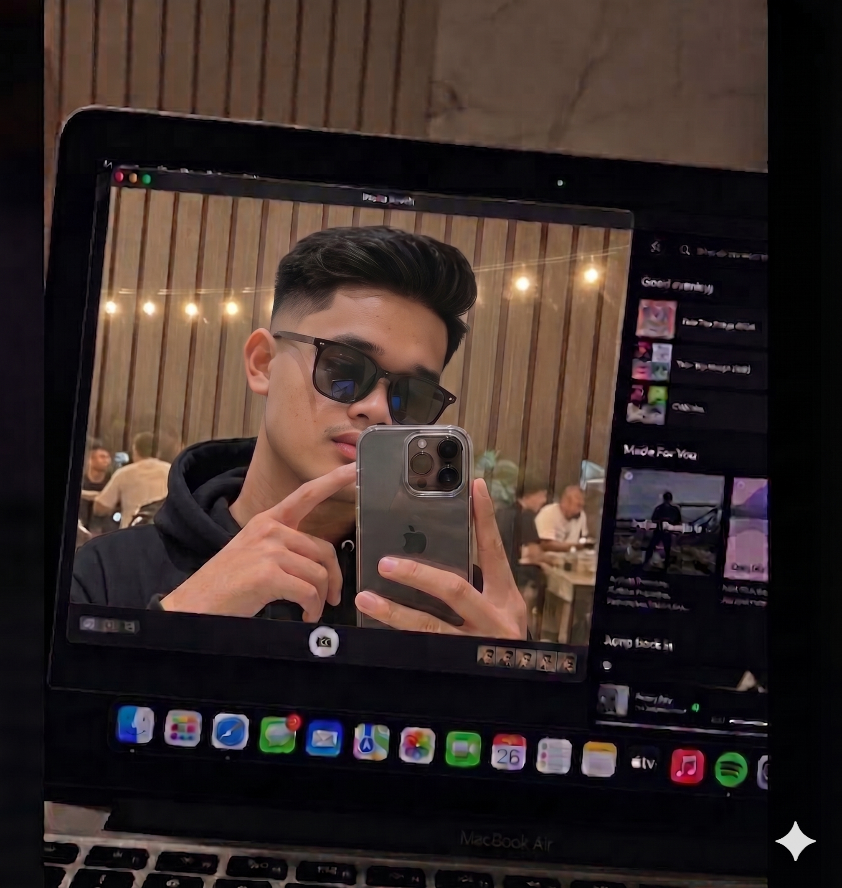

Dedikasi Pada Rekayasa Web Berkualitas
Menggabungkan keahlian logika pemrograman backend yang solid dengan sensitivitas estetika desain frontend modern.

Saya Ilham Wahyu, Full-stack Web Developer
Saya memiliki ketertarikan dalam pengembangan aplikasi web, perancangan sistem, dan pengelolaan basis data. Saya memiliki pengalaman membangun aplikasi web menggunakan HTML, CSS, JavaScript, PHP, Laravel, dan MySQL, mulai dari pengembangan antarmuka hingga pengelolaan sisi backend.
Dengan latar belakang pendidikan Sistem Informasi, saya terbiasa memahami kebutuhan pengguna, menganalisis permasalahan, serta menerjemahkannya menjadi solusi digital yang efektif dan terstruktur. Selain berfokus pada pengembangan aplikasi web, saya juga memiliki ketertarikan pada bidang Data Science, khususnya dalam pengolahan data, analisis data, dan pemanfaatan teknologi untuk menghasilkan informasi yang bermanfaat dalam pengambilan keputusan. Saya senantiasa mengembangkan kemampuan teknis, mempelajari teknologi baru, serta membangun aplikasi yang fungsional, responsif, dan mudah digunakan.
Tools & Teknologi yang Digunakan
Kumpulan teknologi, bahasa pemrograman, framework, dan tools produktivitas yang menjadi keahlian utama saya dalam merancang dan mengembangkan sistem web.
HTML
Markup LanguageCSS
Style SheetJavaScript
ProgrammingPHP
Backend LanguageLaravel
PHP FrameworkMySQL
RDBMS DatabaseTailwind
CSS FrameworkBootstrap 5
UI FrameworkMicrosoft Office
ProductivityGit
Version ControlGitHub
Repository HostFigma
UI/UX DesignPython
ProgrammingVS Code
Code EditorLaragon
Local EnvironmentPengalaman Kerja
Jejak langkah kontribusi saya dalam berbagai proyek teknologi dan tim produk.
Full-Stack Web Developer
- Mengembangkan aplikasi manajemen inventaris gudang berbasis web menggunakan Laravel dan MySQL untuk membantu pengelolaan data barang.
- Membangun fitur pengelolaan data barang, kategori, supplier, serta pencatatan transaksi barang masuk dan barang keluar.
- Mengimplementasikan operasi CRUD dan pengelolaan basis data untuk mendukung pencatatan serta pemantauan stok barang.
Web Application Developer
- Mengembangkan aplikasi pengelolaan surat berbasis web menggunakan Laravel dan MySQL untuk mendukung proses administrasi surat.
- Membangun fitur pengelolaan data surat dan proses pencatatan dokumen secara terstruktur.
- Menerapkan konsep backend development, pengelolaan basis data, serta integrasi antara aplikasi dan database.
Full-Stack Web Developer
- Mengembangkan aplikasi E-Commerce berbasis web untuk mendukung aktivitas belanja online dan pengelolaan toko secara digital.
- Merancang antarmuka pengguna yang responsif serta mengembangkan halaman produk, kategori, keranjang belanja, dan dashboard admin.
- Menerapkan pengelolaan data produk, pesanan, pelanggan, dan transaksi menggunakan konsep pengembangan backend serta basis data.
Pendidikan Formal
Landasan teori ilmu komputer dan pembelajaran teknologi berkelanjutan.
Sarjana Ilmu Komputer (S.Kom)
Fokus bidang: Pengembangan Aplikasi Web, Pemrograman Berbasis PHP dan Laravel, Manajemen Basis Data menggunakan MySQL, serta Data Science dan Machine Learning. Lulus dengan predikat Sangat Memuaskan (IPK: 3.66/4.00).